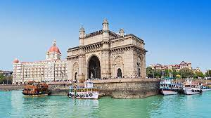

-------------------------------------------------------------------------------------------------
--------------------------------------------------------------------------------------------------------------
-----------------------------------
|
Maharashtra is one of the India's largest commercial and industrial center,
which has lead to its being known as GATEWAY OF INDIA. Maharashtra tourism offers almost everything from
pristine beaches,wildlife sanctuaries,hill stations,natural caves, waterfalls, to imposing forts to
colorful festival,ancient pilgrimage shrines, museums and historical monuments that draw large number
of travellers. Maharashtra boasts a well number of hill stations as well as coastal towns with amazing
sea beaches. Some of the well known hill stations that attract tourists are Khandala, Matheran,
Mahabaleshwar, Panchgani etc.Coastal towns of Alibaug, Malvan, Ganpatipule are also popular with tourists. In
2020, the Maharashtra Tourism Minister declared Aurangabad to be the tourism capital of Maharashtra.
It is also one of the fastest growing cities in the World.THE FOLLOWING ARE SOME OF THE PLACES TO VISIT:
PLACES TO VISIT IN MAHARASHTRA |
AJANTA CAVES |
MAHABALESHWAR |
PANCHGHANI |
|
SHIRDI |
MUMBAI |
LONAVALA |
|
AURANGABAD |
JUHU BEACH |
MARINE DRIVE |
|
LAVASA |
ELEPHANTA CAVES |
SIDDHIVINAYAK |